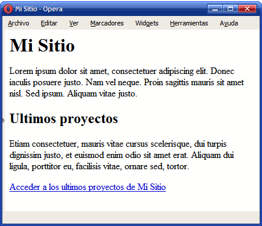

Enlaces
Los enlaces se establecen con la etiqueta a y el atributo href, que indica la URL del enlace:

Los enlaces, que se representan mediante el uso de la etiqueta es una de las contrucciones más importantes en HTML. Esta etiqueta puede tener varios atributos, de lo cuáles los más importante son:
href: que es la dirección de Internet de destino (ya sea otra página web, un imágen, un fichero o lo que sea).target: que indica dónde voy a abrir ese enlace. Si no pongo nada se abrirá en la misma pantalla y si le doy el valortarget="_blank"se abrirá en una nueva ventana de mi navegador.
Varios ejemplos de enlaces:
<p><a href="http://www.openwebinars.net">Esto en un enlace en la propia página</a></p>
<p><a href="http://www.openwebinars.net" target="_blank">Esto en un enlace en la propia página</a></p>
<!-- Haciendo que una imagen sea enlace. Anidando etiquetas -->
<a href="http://www.openwebinars.net"><img width="100px" alt="Logo de OpenWebinars" src="img/openwebinars-logo.jpg"></a>
La etiqueta a es una etiqueta de tipo línea.
El concepto de ruta es un concepto muy importante ya que se utiliza es muchos temas relacionados con la informática y en concreto, en la creación de páginas WEB, se utiliza para referenciar archivos, recursos y/o partes de alguna web. De manera general podemos distinguir:
-
Relativas: Toman como base el directorio en el que se encuentra nuestro fichero. Son las recomendadas.
<img alt="Logo de OpenWebinars" src="img/openwebinars-logo.jpg"> -
Absolutas: Toman como base el directorio raíz de mi equipo. Cuidado, sólo funcionarán en tu mismo equipo.
<img alt="Logo de OpenWebinars" src="/home/jose/public_html/img/openwebinars-logo.jpg">También pueden ser URL dentro del mismo dominio o en otro nombre de dominio.
La recomendación es el uso de las rutas relativas, veamos algunas consideraciones para trabajar con ellas:
- La navegación entre archivos toma como punto de referencia el documento concreto en el que estemos escribiendo en un momento determinado.
- Si escribimos / indicamos que debemos situarnos justo en el inicio de la raíz del árbol. Esta es una estrategia que no recomiendo porqué suele dar problemas.
- Si escribimos ../ subimos al nivel inmediatamente superior.
- Si escribimos
nombrearchivo.htmles porqué este archivo esta directamente en el mismo nivel que el punto de referencia. - Si escribimos
nombreCarpeta/archivo.htmles porqué en el mismo nivel que nuestra referencia hay una carpeta. Entramos dentro de esta carpeta y dentro de la carpeta se debe encontrar elarchivo.html.
Ejercicio 1
A partir de la estructura de directorios y archivos indicada en la siguiente imagen:

Crear la siguiente página llamada indice.html que sirva como página principal del sitio:

Crear la página de índice del portfolio: